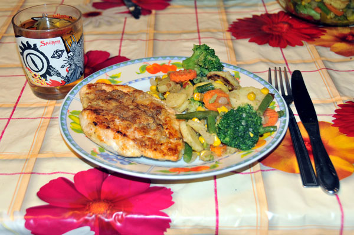

Kotlety z kurczaka
Nie jest to wymyślne danie, ale szybkie i wdzięczne w przygotowaniu. Rozbijamy lekko filety z piersi kurczaka (najlepiej przez folię, żeby ich nie podziurkować), doprawiamy solą, pieprzem i przyprawą do drobiu, panierujemy w jajku i bułce tartej (mące już podziękujemy, byłoby za dużo kalorii ;-)) i obsmażamy na oliwie na złoty kolor z obu stron.

Jeśli chcemy mieć naprawdę szybki obiad, zamiast gotować ziemniaki lub ryż, wrzucamy na drugą patelnię paczkę mrożonych, jakżeby inaczek "warzyw na patelnię" (np. włoskich, już z plasterkami ziemniaków, a poza tym z fasolką, brokułami, kukrydzą i marchewką) i smażymy z 10 minut, obficie dosalając i dopieprzając. I w ciągu dwudziestu minut obiad ląduje na stole - miękki, soczysty i nawet witaminowy. I zajadamy.
|